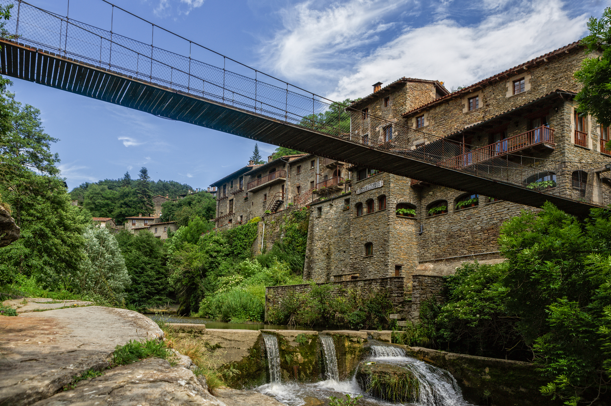

Los pueblos más bonitos
Los pueblos más bonitos

En medio del espacio natural del Collsacabra, rodeado de frondosos bosques y un río, encontrarás Rupit;uno de los pueblos con más encanto de toda Cataluña. >/p>
Rupit es uno de los dos pueblos integrados en el municipio Rupit i Pruit, al norte de la Comarca de Osona, que destaca por su ubicación a 845 metros de altitud. En la actualidad, sus calles empedradas, el puente colgante y el ambiente rural que se respira te invitan a conocer un pueblo único, histórico e imprescindible de visitar.
El primer paso es aparcar el coche en el aparcamiento exterior y adentrarte a pie en el pueblo, ya que no está permitido circular dentro de la villa. Además, si te gusta comenzar con información o conseguir un mapa de la zona, justo a la entradas encontrarás una caseta de información turística.
Para comenzar esta visita, tendrás que cruzar el famoso Puente Colgante que pasa por encima del río de Rupit, un auténtico símbolo de la población.A partir de aquí, ya puedes adentrarte en sus calles, admirar las fachadas de piedra de las casas y descubrir las fechas en las que fueron construidas. ¡Algunas tienen más de cuatrocientos años de historia!
Además de un maravilloso paseo por sus calles medival, también se puede hacer rutas de senderismo.